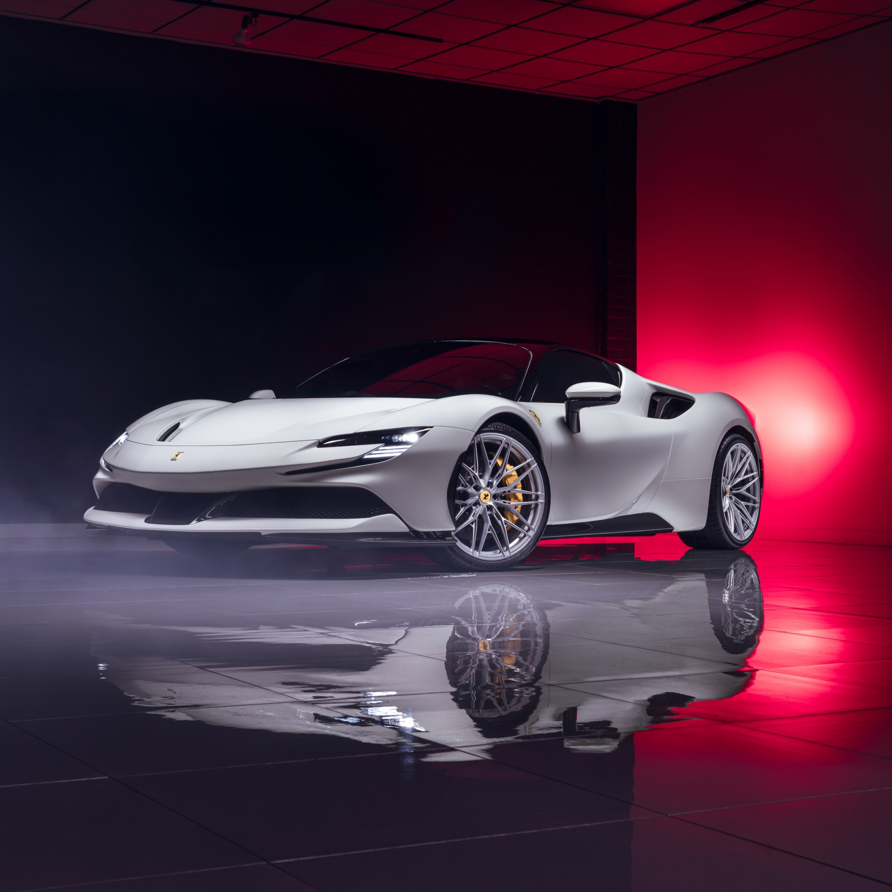

Ferrari SF90 Stradale: El híbrido más potente
Autos deportivosDiseño aerodinámico refinado, motor V8 biturbo, y tecnología de vanguardia. El SF90 Stradale es una joya de ingeniería para los amantes de la velocidad.